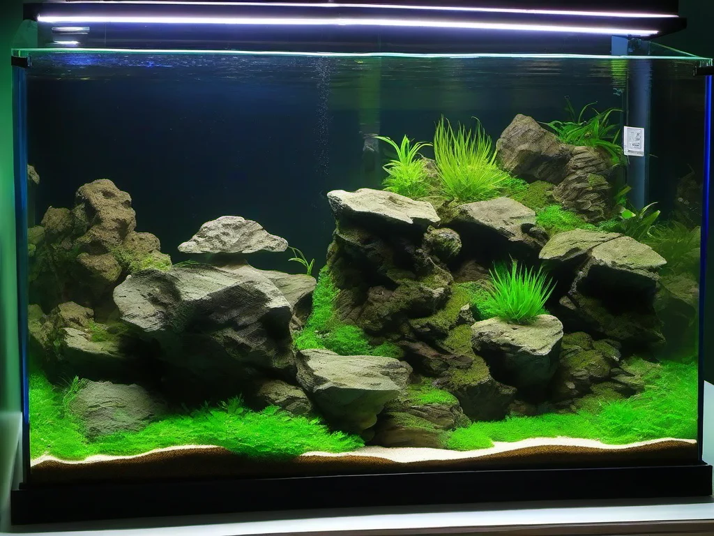

Steine sind neben Wurzeln die wichtigsten Gestaltungselemente im Aquascaping. Sie geben dem Aquarium Struktur, schaffen natürliche Landschaften und dienen als Basis für Pflanzen und Dekoration. Die Wahl der richtigen Steinart ist entscheidend für den Look des Beckens – und für die Wasserwerte. Nicht jeder Stein ist für das Aquarium geeignet. Manche geben Mineralien ab und verändern die Wasserhärte, andere sind inert und lassen das Wasser unberührt. In diesem Guide erfährst du alles über die verschiedenen Steinarten, ihre Eigenschaften und wie du sie zu einem harmonischen Hardscape arrangierst.
Der Begriff „Hardscape“ bezeichnet die nicht-pflanzlichen Gestaltungselemente eines Aquariums – also Steine, Wurzeln, Kies und andere Dekoration. Das Hardscape ist das Grundgerüst, auf dem die Bepflanzung aufbaut. Ein gut durchdachtes Hardscape gibt dem Becken Tiefe, Perspektive und eine natürliche Ausstrahlung. Es ist das Rückgrat jedes gelungenen Aquascapes. Die Kunst des Hardscape-Designs liegt darin, Steine so anzuordnen, dass sie wie ein natürlicher Felsformation wirken – mit Höhlen, Überhängen und Terrassen.
Lavastein ist einer der beliebtesten Aquariensteine. Er ist porös, leicht und inert, gibt also keine Mineralien an das Wasser ab. Die poröse Oberfläche bietet eine ideale Ansiedlungsfläche für nützliche Bakterien und eignet sich perfekt für den Hamburger Mattenfilter oder als Träger für Aufsitzerpflanzen wie Anubias und Javafarn. Lavastein ist in verschiedenen Farben erhältlich – von tiefschwarz über rotbraun bis zu hellgrau. Er ist relativ leicht zu bearbeiten und lässt sich mit einem Hammer in kleinere Stücke zerteilen. Nachteil: Die raue Oberfläche kann empfindliche Fische verletzen. Schleife scharfe Kanten vor dem Einsetzen ab.
Dragon Stone ist der Star unter den Hardscape-Steinen im Aquascaping. Er hat eine einzigartige, zerklüftete Oberfläche mit vielen Mulden, Rillen und Löchern, die an eine Drachenhaut erinnern – daher der Name. Der Stein ist relativ weich (Tongestein) und lässt sich mit einem Hammer gut formen. Dragon Stone ist inert und verändert die Wasserwerte nicht. Seine strukturierte Oberfläche bietet Pflanzen wie Bucephalandra oder Moosen hervorragenden Halt. Der Stein ist in warmen Brauntönen gehalten, die mit der Zeit von einem leichten Grünbelag überzogen werden – was ihn noch natürlicher aussehen lässt. Dragon Stone ist etwas teurer als andere Steine, aber seine optische Wirkung ist unübertroffen.
Seiryu Stone ist ein grauer bis bläulich-grauer Kalkstein mit markanten weißen Adern. Er ist sehr beliebt für moderne, minimalistische Aquascapes im Iwagumi-Stil. Anders als Lavastein oder Dragon Stone gibt Seiryu Stone jedoch Kalzium an das Wasser ab und erhöht die Karbonathärte (KH) und den pH-Wert. In Weichwasserbecken mit empfindlichen Fischen oder Garnelen ist Vorsicht geboten – hier kann Seiryu Stone die Wasserwerte unerwünscht verschieben. In Hartwasserbecken ist er unproblematisch. Wer Seiryu Stone in einem Weichwasserbecken verwenden möchte, kann die Kalziumabgabe durch regelmäßige Teilwasserwechsel mit Osmosewasser ausgleichen.
Flusskiesel sind abgerollte, glatte Steine aus Flussbetten. Sie sind in verschiedenen Größen und Farben erhältlich – von hellgrau über braun bis zu schwarz. Flusskiesel sind inert, preisgünstig und überall erhältlich. Sie eignen sich gut als Basisschicht für das Hardscape oder als dekorative Elemente im Vordergrund. Ihr großer Nachteil: Sie sind schwer zu arrangieren, weil sie keine natürlichen Bruchkanten haben und leicht aussehen wie „hingelegte“ Steine. Mit etwas Geschick und einer Kombination aus verschiedenen Größen lassen sich aber auch mit Flusskieseln ansprechende Landschaften gestalten.
Koke Stone ist ein japanischer Naturstein mit einer rauen, moosartigen Oberfläche. Er ist ähnlich strukturiert wie Dragon Stone, aber meist etwas dunkler und gleichmäßiger. Koke Stone ist inert und ideal für Aquascapes im japanischen Stil. Er wird oft mit feinen Moosen und Farnen kombiniert, die an seiner rauen Oberfläche gut haften. Der Stein ist relativ selten und teurer als andere Sorten, aber seine einzigartige Textur macht ihn zu einem begehrten Gestaltungselement.
Pagoda Stone ist ein geschichteter Sandstein mit charakteristischen horizontalen Bändern und Einkerbungen, die an die Dächer japanischer Pagoden erinnern. Er ist in warmen Braun- und Beigetönen gehalten und gibt keine Mineralien an das Wasser ab. Pagoda Stone lässt sich leicht in Schichten brechen und ergibt interessante terrassenartige Strukturen. Er eignet sich besonders für Aquascapes mit erhöhten Plateaus und Abstufungen.
Ein gelungenes Hardscape folgt bestimmten Gestaltungsprinzipien. Die wichtigste Regel ist die Ungeradzahligkeit: Eine ungerade Anzahl von Hauptelementen (3, 5, 7) wirkt natürlicher als eine gerade. Vermeide symmetrische Anordnungen – ein versetzter, asymmetrischer Aufbau wirkt dynamischer und naturnaher. Der goldene Schnitt ist auch im Aquascaping ein bewährtes Gestaltungsmittel: Das Hauptelement (der größte Stein oder die höchste Steingruppe) sollte etwa bei einem Drittel der Beckenlänge platziert werden.
Die zweite Regel ist die Dreidimensionalität. Ein Hardscape darf nicht flach wirken – es braucht Tiefe. Baue terrassenartige Ebenen auf: eine Hintergrundebene (höher), eine Mittelebene und eine Vordergrundebene (niedriger). Schräge Linien und vom Beckenboden zur Rückwand ansteigende Steinformationen erzeugen eine natürliche Perspektive. Besonders effektiv ist eine leichte Erhöhung der Rückseite – zum Beispiel durch eine Schicht Bodengrund, die von vorne nach hinten ansteigt.
Bevor Steine ins Aquarium kommen, müssen sie gründlich gereinigt werden. Bürste sie unter fließendem Wasser mit einer harten Bürste ab, um losen Schmutz, Sand und organische Reste zu entfernen. Verwende keine Seife oder Reinigungsmittel – Rückstände können das Aquarienwasser vergiften. Hartnäckige Ablagerungen lassen sich mit etwas Essigessenz entfernen, aber spüle die Steine danach sehr gründlich ab. Einige Aquarianer kochen Steine vor dem Einsetzen ab, um mögliche Krankheitskeime abzutöten. Vorsicht: Manche Steine (vor allem geschichtete Sandsteine) können beim Kochen platzen, weil sich eingeschlossene Luft ausdehnt. Kochen ist daher nur bei massiven, dichten Steinen empfehlenswert.
Setze die größten Steine zuerst und baue dann die kleineren um sie herum auf. Jeder Stein sollte fest im Bodengrund verankert sein – wackelnde Steine sind eine Gefahr für Fische und Pflanzen. Bei sehr großen oder hohen Steinformationen kann eine Unterlage aus Filtermatten oder Styroporplatten auf dem Beckenboden helfen, den Druck gleichmäßig zu verteilen und Kratzer im Glas zu vermeiden. Prüfe vor dem Befüllen des Beckens, ob alle Steine stabil stehen. Verschiebe sie nicht mehr, wenn der Bodengrund bereits durchnässt ist.
Ein einfacher Test gibt dir Aufschluss darüber, ob ein Stein die Wasserwerte verändert. Tropfe etwas handelsüblichen Haushaltsessig (5 % Säure) auf den Stein. Wenn es schäumt oder sprudelt, enthält der Stein Kalziumkarbonat und wird die Karbonathärte und den pH-Wert erhöhen. Je nach Besatz deines Aquariums kann das unerwünscht sein. Steine, die nicht reagieren, sind inert und können bedenkenlos eingesetzt werden. Der Essig-Test ist nicht absolut zuverlässig, aber ein guter erster Hinweis. Bei empfindlichen Weichwasserfischen oder Caridina-Garnelen solltest du auf vollständig inerte Steine wie Lavastein, Dragon Stone oder Koke Stone setzen.
Die Kombination von Steinen und Pflanzen ist die Essenz des Aquascapings. Steine dienen als Träger für Aufsitzerpflanzen – das sind Pflanzen, die keine Nährstoffe aus dem Bodengrund ziehen, sondern direkt aus dem Wasser. Auf Lavastein oder Dragon Stone lassen sich Anubias, Javafarn, Bucephalandra und verschiedene Moose (z. B. Java-Moos, Weeping-Moos) mit einem dünnen Nylonfaden oder Sekundenkleber (Gel-Typ) befestigen. Nach einigen Wochen haben sich die Pflanzen mit ihren Wurzeln am Stein festgesetzt und der Faden kann entfernt werden.
Moos auf Steinen ist ein beliebter Stil im Aquascaping. Trage eine dünne Schicht Moos auf den Stein auf, fixiere sie mit einem feinmaschigen Netz oder Nylonschnur und lasse sie anwachsen. Nach etwa vier bis sechs Wochen hat sich das Moos auf der Steinoberfläche ausgebreitet und bildet einen weichen, grünen Belag. Regelmäßiger Schnitt hält das Moos kompakt und verhindert, dass es andere Pflanzen überwuchert.
Iwagumi ist ein aus Japan stammender Aquascaping-Stil, der vollständig auf Steine als Gestaltungselemente setzt. Die Bepflanzung ist auf ein Minimum reduziert – meist besteht sie nur aus einer Teppichpflanze (wie HC Cuba oder Glossostigma) und einem einzelnen, dezent platzierten Blickfang wie einer kleinen Cryptocoryne. Die Steine sind die Hauptdarsteller. Ein Iwagumi-Arrangement folgt strengen Regeln: Ein Hauptstein (Oyaishi) wird im goldenen Schnitt platziert, ein Nebenstein (Soeishi) steht etwas versetzt daneben, und ein dritter, kleinerer Stein (Fukuishi) ergänzt die Gruppe. Die Steine sollten in dieselbe Richtung zeigen, als wären sie durch eine gemeinsame geologische Kraft entstanden. Iwagumi wirkt einfach und minimalistisch, ist aber in der Pflege anspruchsvoll, weil die wenigen Pflanzen makellos wachsen müssen.
Steine im Aquarium benötigen wenig Pflege, aber etwas Aufmerksamkeit. Mit der Zeit bildet sich auf der Oberfläche ein Biofilm aus Algen und Bakterien – das ist völlig normal und für viele Fische sogar eine willkommene Nahrungsquelle. Wenn der Belag zu dick wird oder aus ästhetischen Gründen stört, kannst du die Steine vorsichtig mit einer weichen Bürste sauber machen. Hartnäckige Algen lassen sich mit einer Zahnbürste entfernen. Nimm die Steine dafür nicht aus dem Aquarium – das würde die biologische Filterung stören und die darauf befestigten Pflanzen beschädigen. Bei starkem Algenbewuchs überlege, ob die Ursache (z. B. zu viele Nährstoffe oder zu viel Licht) beseitigt werden kann, bevor du die Symptome bekämpfst.
Ein gutes Hardscape ist wie ein gutes Fundament: Es wird später kaum noch gesehen, aber alles andere baut darauf auf. Nimm dir Zeit für den Aufbau – Umplanen ist nach der Wasserbefüllung kaum noch möglich.
▶ Aquarium-Einsteiger-Sets bei Amazon vergleichen
Die Wahl der richtigen Steinart und der durchdachte Aufbau des Hardscapes sind der erste und wichtigste Schritt zu einem atemberaubenden Aquarium. Ob du dich für den zerklüfteten Dragon Stone, den eleganten Seiryu Stone oder den vielseitigen Lavastein entscheidest – jede Steinart hat ihren eigenen Charakter und ihre eigenen Anforderungen. Nimm dir Zeit für die Planung, zeichne dein Layout vor dem Aufbau auf und scheue dich nicht, Steine mehrfach umzusetzen, bis die Komposition stimmt. Ein gut aufgebautes Hardscape ist die Bühne, auf der später Pflanzen und Fische die Hauptrolle spielen.
Mehr zur Gestaltung deines Aquariums mit Wurzeln und Holz findest du in unserem Artikel Wurzeln und Holz im Aquarium. Und wenn du dich für komplettes Aquascaping interessierst, wirf einen Blick in unseren Aquascaping-Guide.